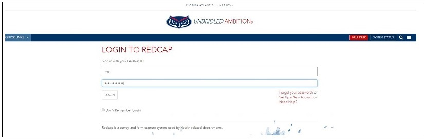
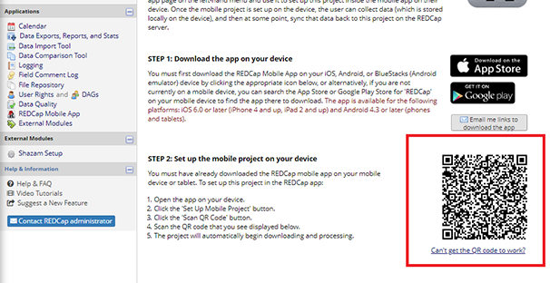

Instructions and Training
REDCap is a secure web application for building and managing online surveys and databases. While REDCap can be used to collect virtually any type of data (including 21 CFR Part 11, FISMA, and HIPAA-compliant environments), it is specifically geared to support online or offline data capture for research studies and operations. Below are instructions on how to sign up for REDCap, access the training videos and how to collect data offline using the REDCap mobile app. Please view the appropriate insturctions below.
-
Go to https://redcap.fau.edu
-
This will redirect you to FAU's Single Sign On(SSO) where you will sign in to REDCap using your FAU NetID and Password

-
You will then be presented with the below page where you will fill out your information to sign up for REDCap. In the email field, please fill enter your FAU Email.
-
REDCap uses Multi-Factor Authentication (MFA) through the DUO Mobile App so authenticate with the app to proceed. If you do not have DUO Mobile set up you can go to te following page which has instructions on how to set it up DUO Mobile.
- Once login has been completed you will be presented with the page below:

- On the top menu you will see the Training Videos tab, click on it. If you do not see it you can access them using this link Training Videos
-
You will then be on the Training Video page. Here you can watch training videos that will teach you all the fundamentals of REDCap.

-
Go to your Google Play Store or you Apple App Store and download the official REDCap Mobile App.
-
Once the app has been downloaded and installed open it from the collection of apps.
-
You will be prompted to
Agree
orDo Not Agree
to the End-User License. After reading the license, pressAgree.
-
After pressing
Agree,
you will be redirected to the page where you will create an App User and Admin User. An Admin Username will have already been set. Input a 6-digit Admin PIN in the textbox highlighted below.
- After you input the 6-digit Admin PIN, you will have to Re-enter it to verify. After doing this, you will have to input a Data Collector Username and a Data Collector 6-digit PIN as seen in the picture below.
- Re-enter the 6-digit PIN for the Data Collector section, scroll down and press
Add Admin and User.
-
After pressing the
Add Admin and User
button, you will be redirected to a page with App update details. On this screen selectClose
and check the boxDo not show me this until next update.
- After closing the Updates prompt, you will be taken to the main user dashboard. On the user dashboard select
Set up Mobile Project.
- Before we continue on the app you will need to log into your REDCap account through a browser. Once you have logged into your account and accepted the DUO request, you will be on the main account dashboard. On the top left of your screen select
My Projects.
- After selecting My Projects, select the project you wish to collect data for on the app.
- Once you have selected the project, REDCap will redirect you to your project Home page. On this page you will see an Applications section on your left taskbar. In this section select
REDCap Mobile App.
Please view the photo below if you have difficulty finding this section
- You will be redirected to a page where you can request a token. Under Step 1 press
Request API token.
- After you request the token, please email Jony Singh (jsingh@health.fau.edu) who will approve the request. Until your request has been accepted, your project page will look like the photo below.
- Once Jony approves your request, you will receive an email notifying you that you have been granted an API token. Go back to the mobile app page and you will have the QR code. This code will be used on the app to link your accounts.

- In step 8 you were instructed to select
Set up Mobile Project.
After you pressedSet up Mobile Project
you would have been redirected to theInitialize a Project
page. On this page pressScan QR Code.
- [These instructions were created using IPhone. On android you will have to go to android settings, then select the REDCap app settings, then give the camera permission. If this is not done properly you will be given the error below]
- After pressing
Scan QR Code
your phones camera will appear. Scan the QR code you obtained on the REDCap website.
- Once you scan the QR Code, your app will redirect you to this page seen below. On this page select the Project you wanted to collect data for. For this example we used the
Test
project.
- Once you press this, you will be redirected to the main app dashboard for your project. Select
Collect Data.
If you require more assistance on REDCap or if you have any questions about it, please send an email to jsingh@health.fau.edu.